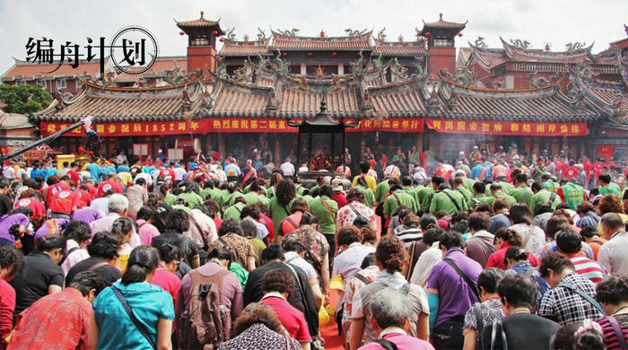
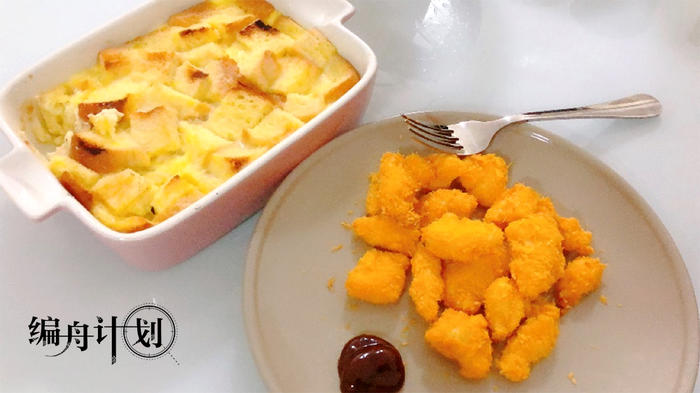
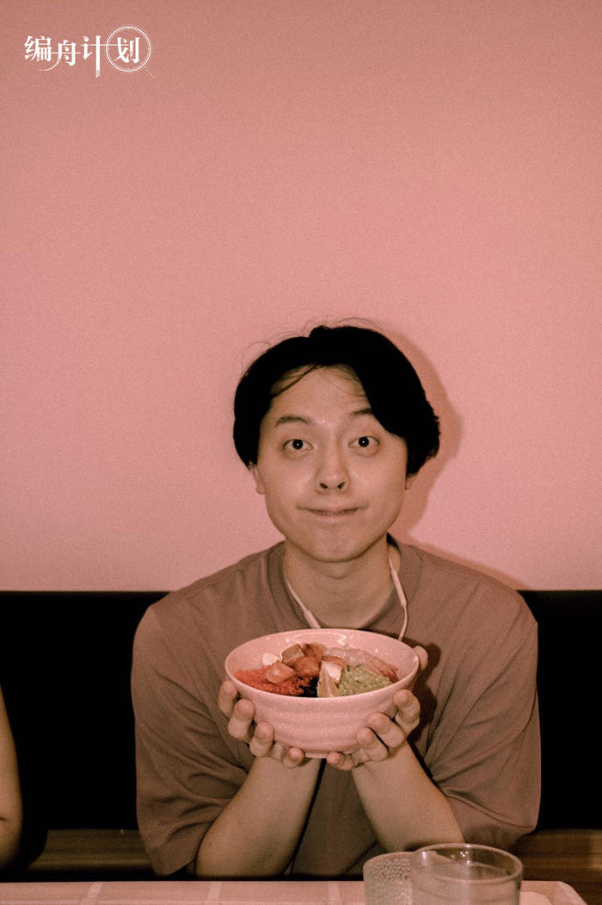
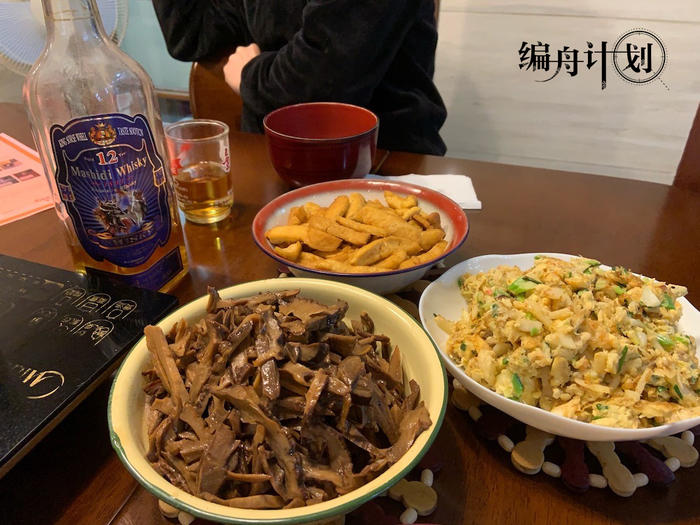
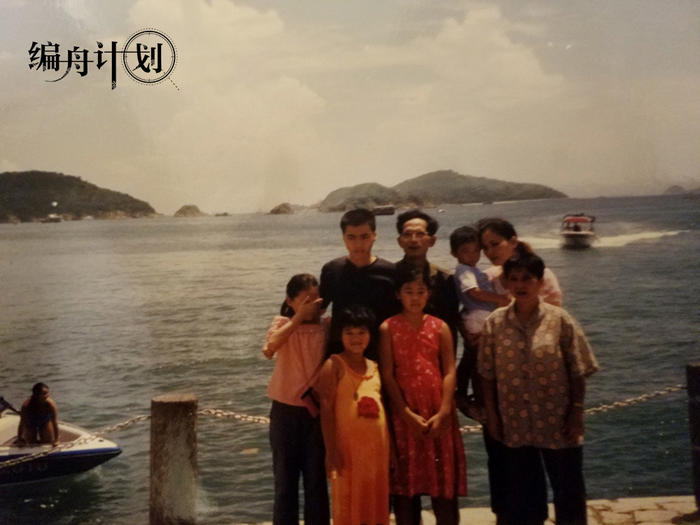

周黑鸭董事长：活着就是未来，活下去就是未来
原文链接 备份链接 文 | 龚菁琦 编辑 | 槐杨 1 《人物》：这个春节，你是怎么度过的？ 周富裕 ：农历二十七，我回了重庆老家，准备看看两位老人。农历二十九，也就是1月23日，知道封城的消息。本想在家里陪陪两位老人，但是很遗憾。封城当 …
无论是漩涡中心的武汉，还是看似平静的小城，人们正在通过游戏建立新的纽带。
_编辑_陈静2020年02月18日 15时33分
本文为今日头条“编舟计划”系列文章第13篇。 编舟计划，记录游戏与时代，只收集与游戏相关最优秀的文章。
从1月23日开始，武汉、黄冈、鄂州、荆门等多个湖北城市陆续宣布实施全面交通管制。随后，浙江、湖南、广东、广西等省市启动一级应急响应。城市、村镇、小区、家庭开始层层隔离，十几天里，人们被迅速地划分成了一座座彼此独立的岛屿。
在尚看不见尽头的隔离中，一些人想用游戏在岛屿间架起桥梁。
1月23日凌晨2点半，卡卡在微博上看到了武汉公共交通停运、离汉通道关闭的消息。
她的第一反应是：可以理解，但为什么要在半夜发布这么重要的事情？转念一想，倒是能踏实一点儿了。在此之前，她母亲每天坚持不戴口罩出门，她在新闻里看到疫情一天比一天严重，又劝不动母亲，只能躲在自己房间里抱着猫偷偷哭。
卡卡家住武昌老城区，离最近的一家定点医院大约3公里。小区是开放式的，没有物业，无法封锁，针对疫情没有采取任何措施。这里的人们应对新冠肺炎唯一的方法是不出门。1月22日，武汉市政府规定市民出门必须戴口罩。卡卡看了看家里的存货，护理口罩还有一点，酒精、消毒用品一点也没有。她想了想，还是尽量不出门吧，出门也买不到口罩，不出门好歹没有消耗。
从大年初一开始，母亲也不出门了。
公共交通停运后，私家车也面临管制。1月25日，武汉市新冠肺炎疫情防控指挥发布通告，武汉市中心城区区域机动车禁行。经过了激烈的反弹和讨论之后，武汉交警又发布消息说，“市公安交管部门将对禁止通行的车辆通告车主，对未通告的车辆一律实行通行”。由于措辞令人费解，这条消息被网友们称为“阅读理解”。
私家车禁行在通告当天如此收尾，但武汉三镇之间、区与区之间仍在隔离。另一个同事向卡卡诉苦，说他的女朋友住在另一个区，两人都没有私家车，彼此连面也见不上了。
武汉宣布全面交通管制时，家住洪山区的王金还在梦中。一觉醒来看到消息，她觉得，封晚了。要走的早走了，本地人想走也没地方去。在她看来，之前离开武汉的，大多是回家过年的外地人。
小区很快也被封锁，外人不许出入，快递停运，外卖只能送到小区大门口。王金说，就算能叫外卖，她也不会叫，不想有人因为她在外面走动。“如果因为我，导致外卖小哥感染上病毒，我会疯的。”

小区电梯里的防护措施
与武汉相比，其他城市的情况要好一些。在扬州，武汉人小虹和她父母已经在家待了将近两周。
小虹住的小区早早封闭了周围大门，只留一个出入口，所有人必须戴口罩、量体温才能进出。公共场所和楼道每天消毒，电梯按键贴着保鲜膜。针对湖北人，小区贴出告示，要求“湖北过来的人”必须主动报备，主动隔离。作为武汉人，小虹一家也要提交个人信息，定时被电话或微信“回访”。
一家三口没回武汉过年。留在武汉的亲戚说，今年的年夜饭取消了，大家都改用微信拜年，“身体健康”成了最常见的祝福语。
28岁的上海人汤包赋闲在家。他是沉浸式戏剧演员，工作在剧场。1月20日，钟南山院士宣布新型冠状病毒存在人传人。几乎是同时，社交媒体上有人建议人们不要再去电影院、剧院等人群密集场所。汤包所在的剧场也歇了业，这意味着他暂时失去了工作。
除夕当天，张朔回到老家泉州，把PS4、Switch和两只猫留在了北京。他原本打算最多一周就回北京，结果在泉州待了快一个月。他也不是不想回家，但在福建，宗族观念是张朔和许多年轻人不愿回家长住的原因之一。
张朔住的小区是拆迁后建起来的。大批大批的家族宗亲短暂地离开老房子，又全部搬进同一个小区。在现代高层住宅楼的环绕中，一个低矮的小祠堂才是小区真正的中心。这是张朔在北方城市里无论如何都看不到的。在当地，几乎每个月、每个片区都有不同的祭祀活动，人们聚集在祠堂里，街道上。“那场景比北京的庙会夸张多了。”张朔说。

泉州涂门街关帝庙的祭祀活动（图片来自网络）
回家之前，表弟给张朔发微信：我们都在水深火热之中。回到泉州那一天，张朔发现自己的外婆“失踪”了。问过家人，才知道她是跑出去参加祭祀活动，没有人劝得动。临近节日，祭祀活动数不胜数，外婆去了哪里，参加了什么，见了多少人，家里人统统不知道。
张朔觉得，这或许是二三线城市的常态。疫情初期，人们从电视、手机上接收到的新闻会让他们觉得事情离自己很远，也不严重，所以根本没有重视。直到除夕那天，清源山、仙公山、关帝庙等景点宣布关闭，大家才隐约感觉到，事情可能变了。
与空间上的封闭相反，各种各样的信息透过通讯网络如潮水般漫过目之所及的每一个角落。卡卡打开朋友圈，看到很多人戴着口罩在超市里疯狂囤货，蔬菜、肉类、生活必需品，场景夸张得像灾难电影。如果不是自己正身处武汉，她也很难相信这是真实的。关掉微信，一个外籍同事发来的短信出现在屏幕上：我妻子的表弟一家人确诊了新冠肺炎。她迅速地回复了一条“OMG”，接下来就不知道该说什么了。
小虹有一些亲戚在医院工作，有了他们的提醒，全面隔离之前，留在武汉的家人们就开始囤积口罩和一些药品，并且决定取消年夜饭。随着疫情升级，这些医生、护士也成了最令人担心的人。他们离危险最近，也能接触到最真实的状况。
一个亲戚在隔离病房，每天工作时间都在10小时以上，不能携带通讯设备，每天只能在规定时间、在医院系统内的留言板上写下消息，再用短信发给家属。这是他们唯一与外界联系的方式。那些发出来的“内部消息”，大多也只是让家人朋友们持续做好防护，注意安全。
家庭微信群里，每天最重要的内容是互报平安。从扬州看武汉，小虹问家里亲戚最多的是，东西缺不缺，防护有没有做好，爱出门遛弯的长辈还去不去。亲戚们也回复一些看起来轻松愉快的话。一旦提起日渐攀升的确诊病例、死亡人数和不知何时能够结束的隔离，气氛就会压抑起来。

在家的日子里，小虹会为自己和家人做上几道拿手菜
在启动一级响应之前，上海的口罩、酒精、消毒用品已经被抢购一空。汤包没有买到足够的口罩，1月23日当天，他正在努力劝说家里长辈取消春节聚餐。他们不是不怕，每个人都很想取消，但谁都不愿意第一个站出来说这件事，这让汤包觉得很烦。
和长辈沟通起来，方法很重要。汤包家里很多长辈痴迷长牌——一种类似麻将的纸牌，每天出门玩，雷打不动。汤包找到他们之中最有威信、说话最管用的那一位，摆数据讲事实，拿出《人民日报》、新华网上的消息轮番轰炸，成功说服了对方。有“重量级人物”支持，再劝其他长辈就顺利多了。
如今在武汉，所有人出门必须戴口罩。王金家里还剩十几个口罩，原本还有些N95，口罩紧缺后，她把N95全部送给了在医院上班的朋友。除了口罩之外，她还给朋友“赞助”了两辆电动自行车——武汉交管局宣布交通限制之后，家里3辆电动自行车她只留下一辆自用，剩下的都借了出去。她想，朋友在医院工作都已经累坏了，总不能再让她们走路上班吧？
王金有不少亲戚朋友在一线：医生、护士、警察、基层公务员。和人聊QQ、微信时，一有机会她就号召大家，能不出门尽量不出，少给一线工作者添乱。
为了不添乱，王金一直宅在家里，除了玩游戏，还报名当志愿者，帮那些不知道自己社区联系方式和沟通渠道的人对接消息。
有些时候，玩家和志愿者的身份也不是泾渭分明的。她加过几个武汉玩家群，里面虽然都是玩家，喜欢的游戏却都不一样，不一定能聊得到一起。但只要群里有人求助，她总是帮忙想办法。有一次，群友说买不到肉和菜，社区也没有安排送菜，她立刻转发了一个小程序，告诉对方，可以看看这里送不送。
在泉州，最先响应变化的仍然是年轻人。1月24日，张朔去药店买口罩，N95口罩每个售价25元，每人限购3个。两个20多岁的年轻人排在他后面，一看就是跑了很多地方买口罩的，一边抱怨贵，一边掏钱。
想让长辈改变主意就没那么容易。年初一，家里亲戚组织去海鲜酒楼吃饭，张朔“以死相逼”，把父母留在了家里。他回想起当天自己的爆发，那种痛苦和愤怒还记忆犹新。
疫情期间，劝长辈不出门有套常见话术：因为疫情严重，今年少吃这一次饭，保重身体，以后还有机会再吃……一般人说到这里，也就差不多了，但在张朔家里，这些话几乎不起作用。在父母长辈心目中，过节和聚餐是规矩的一部分，而规矩就是在某个时间一定要做某件事，假如你不做，别人就会觉得你们家有问题。
年轻人受不了这些规矩。张朔表面上对母亲大吼大叫，心里却充满了无力感。不论他怎么说，母亲明知身体健康更重要，却仍然觉得不出门不好，不和亲戚聚会不好，不守规矩不好。这让他彻底放弃了讲道理，改用道德绑架：他对父母说，你们要是去吃饭，我立刻买机票回北京。
好的是，张朔发现，状况在慢慢改变。
年初一的聚餐，虽然张朔一家缺席，但表弟后来对他说，当时整个酒楼里只有他们一桌人，其他亲戚吃饭时，知道他把父母硬留在家里，也是支持的声音居多。年初三，外婆家的亲戚本来要聚会，但组局的人看到疫情严重，直接取消了。张朔觉得，这说不定是个开端。
社交平台上，来自武汉和湖北其他城市的求救塞满了卡卡的首页。她在那些求救信息里看到了自己的朋友、朋友的家人、朋友的朋友，但除了转发和担忧之外做不了什么；另一些朋友的账号消失，重新出现，又永久消失，也让她觉得难过。
心灵上的痛苦逐渐转化成身体上的变化。由于“待在家里没消耗”，从隔离开始，她的食量从一天三顿饭，变成一天两顿、一天一顿、两天一顿，后来经常两三天吃一顿饭。她觉得自己身体没什么问题，就是不饿，不想吃饭。为了集中精神，她把以前攒下来、一直没时间做的钢普拉拿出来拼。拼好了，就和猫一起拍张照片。

猫与钢普拉
在钢普拉之外，卡卡开始试着玩游戏。有几个同事沉迷《魔兽世界》和《天堂2》怀旧服，但她平时本不热衷游戏，也不擅长，这些大型游戏她都玩不来。另一个微信群里，有朋友请她帮忙点击微信小程序里的《动物餐厅》，她点开看了看，就一直玩了下去。
《动物餐厅》是个放置类游戏，非常简单。每一天，卡卡每隔一段时间就打开《动物餐厅》，看看攒了多少小鱼干，有没有新顾客，能不能解锁新成就。但她也不是真的在乎这个“餐厅”经营得怎么样，只是在微信群里和朋友们互聊聊游戏，互相点点链接，帮忙做做任务，让她感觉到自己还和外面的世界保持着联系。
后来，卡卡收到一个朋友报平安的消息。朋友说，她们一家三口趁着还能离开武汉时，连夜赶回了昆明娘家，因为孩子刚满一岁，她不想冒险留在武汉。到昆明之后，她们去社区汇报，到医院检查，然后在家隔离，如今看来没有什么问题。卡卡放下手机，心想，既然哪里都要隔离，那么在哪里也都一样。
小虹有不少爱好，逛街、旅游、读书、美食、游戏，她都喜欢。如今隔离在家，就只剩下了游戏。小虹从小学开始接触游戏，到现在大四，已经成了一个资深PC玩家。她喜欢剧情精彩的单机游戏，也喜欢快节奏对抗的在线游戏，常和朋友一起“守望”“吃鸡”，也会一个人玩“巫师”“过山车之星”系列。上课、实习的时候，她每天只能玩两三个小时游戏，现在就完全不同，每天花六七个小时玩游戏，是很常见的事儿。
像小虹这样的玩家不在少数。春节前后，腾讯、网易等国内游戏公司呈现出一片蒸蒸日上的态势。有报道称，疫情期间中国手机游戏用户规模较平日增长30%，人均单日使用时长增长17.8%，《王者荣耀》春节期间日活跃用户量峰值超过1亿。2月3日，Steam同时在线用户数超过1880万，突破了两年前的纪录。
人多了，游戏环境就不好说了。小虹打开自己常玩的几个FPS游戏，“吃鸡”总能遇到自瞄、透视挂；《反恐精英：全球行动》，5把里至少3把有挂；《守望先锋》大师分段，几乎每一局都有外挂和代练。

小虹觉得自己的FPS水平“还可以”
往常，父母不支持她玩游戏，觉得“女孩子打游戏不好”。现在，为了消磨时间，缓解气氛，父母也开始和武汉的亲戚长辈们在线玩麻将、斗地主。看到小虹屏幕里的《饥荒：联机版》和《GTA Online》，他们只是提醒：别坐太久了，隔一会儿得起来活动活动。
很多时候，游戏意味着社交，至少是社交的重要弥补。小虹关系最好的几个朋友都是在游戏里认识的。随着隔离时间越来越长，她受朋友邀请，开始玩些简单欢乐的多人小游戏。
这个时候，越简单的游戏越受欢迎。对许多原本不接触游戏的人来说，即使是公认社交强度高的MOBA、卡牌对战手游，也嫌太过复杂，他们更喜欢微信小程序里那些不用下载，打开就能玩的游戏。“你画我猜”“猜歌名”等等流行于80后、90后童年时代的游戏借着微信平台的东风，一跃成为炙手可热的游戏。打开微信小程序搜索“你画我猜”，70多个大同小异的游戏等待着人们线上组局。
小虹也连续玩了两三天“你画我猜”。一起玩的都是认识的朋友，气氛很轻松、很搞笑，玩一轮花的时间不长，也不耽误做其他事情。但即使如此，她还是坚持不了太久，玩个五六轮就觉得疲劳，没几天就放弃了。
小虹觉得，“你画我猜”这样的游戏不能维持下去。“模式太单一，玩着玩着就腻了。”由于疫情严重，大部分年轻群体都被困在了家里，这些游戏确实可以帮他们打发时间，满足一部分社交需求，但显然无法长久。
汤包同样需要社交。人待在家里，信息交流却不能少。他对社交本身兴趣不大，但在戏剧行业工作，必须时常了解行业动态，因此总要和同行朋友们聊天、聚会。在聚会上，汤包接触到了很多游戏。
由于从小家教很严，汤包童年时代除了《俄罗斯方块》之外，什么游戏都没玩过。长大之后才接触了几个手游，像是《王者荣耀》《阴阳师百闻牌》，每天不超过20分钟。后来，他认识了《疑案追声》游戏策划，开始玩一些独立游戏——《Gris》《Her Story》，当然也包括《疑案追声》。这些独立游戏让他觉得，游戏其实是一种综合艺术。
归根结底，汤包对游戏的感情不算深。有没有游戏，他的生活没有太大区别。和朋友聚会时，他们玩的大多是聚会游戏：《马力欧派对》《任天堂明星大乱斗》《舞力全开》，还曾经用《模拟人生》的捏脸功能互相设计形象。“对我来说，游戏本身不能解压，和朋友们在一起才解压，”汤包说，“所以能和朋友一起玩的游戏就挺好。”

想吃Poke Bowl（夏威夷盖饭）的汤包
出不了门，聚不了会，汤包和朋友之间的联系，还剩下游戏。更具体点儿说，是在线打牌——由于不喜欢陌生人隔着屏幕骂街，汤包已经很久没有打开《王者荣耀》了，别的游戏也挑不出更好的，选来选去，还是打牌最合适。
说是打牌，其实更像聊天。汤包和朋友们一边开着棋牌软件，另一边开着语音，和面对面打牌时一样。疫情期间，汤包在牌桌上感慨过“这个疯狂的世界”，但他也知道，这样的感慨很快会被抱怨手气差、家常琐事、笑话八卦等等更轻松的话题消解过去。
汤包说，暂时失去工作对他影响不算大，毕竟剧场本来就是项目制的，留在家里多看书多休息，也许以后能做个瘟疫题材的戏。
王金和父亲坐在一起，给母亲加油助威。
母亲正在打苇名弦一郎，她沉着冷静地格挡、闪避、输出、雷反，一会儿工夫，随着最后一次处决，画面黑屏，“忍杀”的白字亮了起来。她放下手柄，对女儿说，这游戏晃眼睛，还是“超级玛丽”好玩。
和许多玩家不一样，王金是被父母带进游戏世界的。从最早的“小霸王”开始，直到PSP3000之前，家里所有的主机、掌机都是父母买的。正因如此，一家三口养成了一个习惯：其中一人拿着手柄玩游戏时，另两个人在一边看，Game Over了就换人。
等到她上了小学，父母又主动教她上网。这不仅没让她染上“网瘾”，反而觉得上网不是什么大不了的事，不值得特殊对待。
家里游戏水平最高的，是母亲。王金说，至少在动作游戏领域，母亲比她和父亲加在一起还强。父女俩玩游戏时都喜欢大呼小叫，输出主要靠吼，操作一变形就手忙脚乱，相比之下，母亲更理智，心定手稳，效率高，总能所向披靡。
父亲更中意RPG。在家隔离的日子里，他天天在《荒野大镖客：救赎2》里骑马、打猎，多少缓解了不能出门的焦虑。

王金说，家里太乱了，所以决定只让她养的兔子出镜
足不出户的日子越来越长。父亲喜欢下棋、做菜，不出门影响不大。母亲喜欢跳广场舞，这个习惯一时半会儿改不了，为了跳舞，她每天晚上定时和闺蜜们视频，在客厅里坚持跳。
父亲也支持母亲健身。他以前当过军医，深知健康作息的重要性。从春节假期到在家隔离，人的时间观念越来越弱，总是睡到中午才起床。这让他十分担忧。后来，家里规定每天必须早睡早起，早午晚都要运动，坚持吃水果。父亲说，这样做是为了以后复工做准备，不然散漫惯了，身体会吃不消。
余下的时间，一家三口大多花在了游戏上。王金会和朋友们一起《最终幻想14》，也常在《文明6》里“再来一回合”。假如在动作游戏里卡了Boss，她已经习惯了“打不过，喊妈妈”，母亲也乐于给女儿多一重依靠。王金决定，在母亲打通《只狼》之后，要给她推荐那个变态版“猫里奥”——既然她喜欢“马里奥”，又擅长动作，想必难不倒她。
即使难倒了，王金也不担心自己被母亲揍。“现在我爹不能再拿下楼遛弯当借口，要揍也是揍他。”说这句话的时候，她很轻松，也很乐观。
难得有这么长时间和父母相处，张朔决定，趁这个机会，让父母体验他喜欢的东西。
张朔最大的爱好是游戏。但一上来就给父母推荐电子游戏，不太现实。思考过后，他打算和父母一起玩桌游。
家里没有合适的桌游，张朔反复挑选，在一家还能发货的淘宝店下单了“推新神作”《璀璨宝石》。去小区门口取快递时，父母还以为他买了口罩，等到拿回家拆开，才发现是游戏。
父母不再批评儿子买游戏，只是说了他几句，这时候还出门取快递，不安全。张朔告诉他们，买这个游戏是为了和你们一起玩的。父母不以为然，觉得自己这么大的人了，还玩什么游戏。张朔反驳：现在的人不就是越老越像小孩吗？
2月9日下午，母亲在电视盒子里看完了《养母的花样年华》最后一集，和父亲一起坐在沙发上玩手机。张朔意识到，机会来了。他赶紧掏出《璀璨宝石》，招呼父母：玩手机有什么意思，来玩游戏吧！
父亲借口抽烟溜走了，母亲看上去还有些兴趣。张朔把卡牌和配件一一摆上桌子，向母亲讲解规则。《璀璨宝石》规则简单，收集卡牌和筹码的玩法又和老一辈人爱玩的扑克、麻将有些相似，更容易让他们接受。在桌游爱好者圈子里，《璀璨宝石》一直是最适合推荐长辈的游戏之一。
这只是一方面。张朔总结，和父母一起玩游戏，简单、轻松确实重要，但更重要的是态度。“最初我只讲一些最基本的规则，然后在游戏过程中慢慢告诉她，你还可以这样做，你还可以那样做。”张朔说，要让父母感觉到，你是在和他们一起研究规则，一起进步，而不是居高临下指点他们。
小技巧当然也很重要。张朔小声说，自己在第一局里放水了。玩到一半，父亲忍不住来看热闹，张朔趁机给他讲了讲规则。这时母亲不乐意了，催促他：你倒是快点拿牌呀！

张朔的母亲正在认真研究《璀璨宝石》
一局结束，母亲以1分险胜。张朔心里有些惴惴不安，母亲还会继续玩吗？她是真的想玩，还是不想让我不高兴，勉强陪我玩了一局？他的手按在桌面上，迟迟抬不起来。但母亲似乎没有注意到，她拿起牌，随意洗了洗，按照规则重新摆好，然后对儿子说，我们再来一局吧。
那一刻，张朔有点想哭。
“我看到我妈手里攥着一把Token，埋头认真思考下一步应该怎么做的时候，心里的感觉真的难以形容，就像在一个平行时空里，眼前都是不真实的。”张朔想起了父亲对他说过的一些事。在更严苛的环境里，父母从小接受的教育是，要早早自立，十几岁就得赚钱养家，娱乐永远排在生存之后。张朔觉得，很多时候，父母不是厌恶游戏，只是他们的成长环境让他们排斥一切不“实用”的东西。
疫情期间，社交平台一度流行一种说法：很多人平时嘴里说自己“宅”，其实只是伪宅，一旦真的隔离了，就总想着出门；现在还能安然待在家里的才是真宅。还有人说，这是“宅”们光明正大为国家做贡献的机会。
小虹觉得自己是个真宅。几周不出门不是大问题，即使没有疫情，她也不爱参加蹦迪、唱K之类的社交活动。相比之下，她更怀念外卖奶茶，“喝不到‘一点点’和‘COCO’我要死了。”她说。
真正受影响的，是她的工作。小虹在大学里读旅游与酒店管理专业，如果疫情没有发生，她应该正忙着实习。然而现在，旅游已经成为受影响最直接、最严重的行业之一。
人群不许聚集，景点关闭，酒店停业，餐馆收歇……小虹说，这种影响是环环相扣的。不止国内，还有不少国家对出入境作出了限制。这让小虹感觉到，至少今年上半年，旅游业的发展不会太好。
这对她个人意味着什么，小虹还没有想过。
小家庭里，改变也悄然发生。自从回到泉州，每晚吃饭，张朔都要陪父亲喝点儿酒。
福建是个特别的地方。早年间“下南洋”的习俗和如今的“北漂”相互碰撞，让两代人之间的关系变得微妙起来。张朔的爷爷年轻时去过新加坡，父母也在他三四岁的时候去了中国香港地区；等到他成年，父母希望他留在泉州，找个稳定的工作，结婚生孩子，但他又不愿意，一个人跑到北京工作。“小的时候，我在家里留守，长大了，父母在家里留守。”张朔说，我一直没有和父母建立起紧密的联系。
但父亲总是盼着儿子回家。张朔的父亲喜欢喝酒，每天晚饭时习惯倒上半杯白酒，自斟自饮。儿子回家，他非常高兴，终于有人陪他喝喝酒、说说话了。如果一个人喝，他总觉得那半杯酒怎么也喝不完。张朔喝不惯白酒，父亲特地给他开了一瓶八几年的人头马。

酒瓶很快见了底
在酒精和时间的催化下，父亲和儿子谈了很多过去的事。张朔说，这是父亲第一次告诉他，爷爷当年为什么要去新加坡，他们年轻时在香港过着怎样的生活。他也第一次真诚地告诉父亲，这种互相留守的经历给他造成过多大的伤害。听他说起这些，父亲恍然大悟：原来孩子成长中发生了这么多事，他竟然一点儿都不知道。
“沟通多了，对立、矛盾、隔膜什么的就少了。”张朔觉得，虽然有些传统观念很难改变，但他父母还属于那种“能沟通”的，比起那些完全陷入原生家庭阴影的朋友，他已经很幸运了。
“我这样说可能不太好，”张朔仔细斟酌着用词，“疫情、隔离，这些事情对于整体而言是个灾难，但在我们这种没有被实际波及的小家庭里，这是一个大家坐下来好好沟通，尝试体验新东西的机会。”正是因为不能上班，不用考虑赚钱养家的事，父母才能单纯地坐下来，和儿子一起玩一个游戏。

张朔保留的一张老照片，是与爷爷、奶奶、姑姑、妹妹、堂妹们的合影，他回忆，自己小时候几乎没和父母一起拍过照片
游戏的意义可能有很多。张朔说，其中很关键的一个，是帮助人们建立起情感上的联系。孩子与父母，丈夫与妻子，他们出于各种原因，在人生的前半段错过了，但仍然可以从现在开始，坐在桌子前，用游戏来了解彼此。
张朔又回忆起他的童年时代：父母远在香港，留他和爷爷奶奶一起生活，老人很疼他，但工作也很忙，没法及时去学校接他放学。上小学时，他每天眼睁睁看着同学们一个一个离开，灯一盏一盏熄灭，他一个人躺在一张露天的乒乓球桌上，继续等待，直到天完全变黑，星星和月亮悬在头顶，才能看到爷爷骑着一辆小自行车，晃晃悠悠地到校门口找他。当时他就觉得，虽然我住在这个地方，但我和这个地方一点关系也没有。
如今，张朔不断尝试理解父母。他意识到，有些事情是改变不了的，我们可能永远也等不到父母理解自己，那么只有开始理解父母，彼此的关系才可能有转机。
这个转机可能是一杯酒，一场谈话，也可能是一个游戏。“最重要的是沟通。”张朔说，所谓沟通不是把父母当成敌人，用伪装去查探他们的想法，而是要发自内心地互相了解。他承认，自己以前有过功利性的妥协，为了让父母少管他，少催婚，他说过许多言不由衷的话。
但和父亲喝过酒，和母亲玩过桌游之后，张朔觉得，“我真的可以和他们沟通了”。
（文中卡卡、小虹、汤包、王金、张朔为化名。）
（本文由今日头条游戏频道“编舟计划”独家支持，今日头条首发。点击访问编舟计划，用文字将游戏与时代编织相结。每周一篇，敬请期待。未经授权，内容不得转载。）
原文链接 备份链接 文 | 龚菁琦 编辑 | 槐杨 1 《人物》：这个春节，你是怎么度过的？ 周富裕 ：农历二十七，我回了重庆老家，准备看看两位老人。农历二十九，也就是1月23日，知道封城的消息。本想在家里陪陪两位老人，但是很遗憾。封城当 …
原文链接 备份链接 *************▲*************1月29日，钱珵戴着用文件袋改装的面罩，在医院抽完血后自拍。 （受访者供图/图） 全文共4492字，阅读大约需要10分钟。 这次疫情有影响到我最近写剧本的内容， …
原文链接 备份链接 本文作者是一名报社的实习记者，得知肺炎疫情严重之时，她决定回到家乡武汉，跟家人在一起。她日夜感受病毒是如何改变着、影响着武汉人的生活，并决定记录下周围发生的故事。在今天这篇“武汉日常”每日书中，她采访了一位朋友，他的处 …
原文链接 备份链接 童言是生活在新加坡的三明治专栏作者。自1月23日确诊第一例“新型冠状病毒肺炎”病例以来，目前新加坡已确诊18个病例，在海外确诊数据中排名第三，仅次于日本、泰国。 这场“肺炎”疫情牵动着许多在海外中国人的心绪。华人群体 …
原文链接 备份链接 今天，火神山医院正式交付。9天时间，可容纳1000张床位的医院在武汉落成，参照非典期间北京小汤山医院模式，专门收治新型冠状病毒肺炎患者。在医院床位紧缺的情况之下，大家对火神山和雷神山给予了期望，而实际效果如何，能多大 …